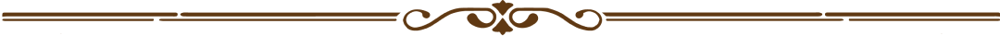
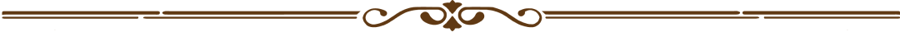

NudieJeans
Info
Nudiejeans heeft duurzame denim, van spijkerbroeken en jassen die gemaakt zijn om jaren mee te gaan is hun slogan. "Create tomorrow's vintage"

Locatie
De winkel van Nudiejeans ligt in het hartje van Amsterdam op een loopafstand van 5 minuten van de Dam.